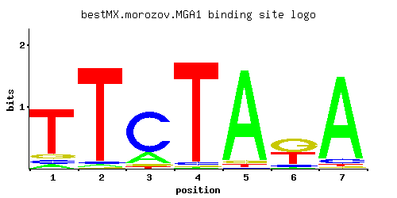

MGA1
YGR249W
Protein similar to heat shock transcription factor; multicopy suppressor of pseudohyphal growth defects of ammonium permease mutants
Best-performing DNA-binding model.

View and copy the recommended matrices ↘
A | 0.068 0.025 0.192 0.008 0.933 0.041 0.909 C | 0.071 0.025 0.738 0.028 0.011 0.090 0.052 G | 0.079 0.010 0.043 0.010 0.034 0.467 0.017 T | 0.782 0.940 0.026 0.954 0.022 0.401 0.021
A | 6 2 19 0 93 4 90 C | 7 2 73 2 1 9 5 G | 7 1 4 1 3 46 1 T | 78 94 2 95 2 40 2
A | -1.55 -2.55 -0.51 -3.69 1.07 -2.05 1.04 C | -0.93 -1.97 1.41 -1.86 -2.80 -0.69 -1.24 G | -0.82 -2.89 -1.43 -2.89 -1.67 0.95 -2.36 T | 0.89 1.08 -2.51 1.09 -2.68 0.23 -2.72
Alternative candidate matrices 4
Historical matrix candidates from the original ScerTF database. Expand a source to inspect its original logo, scores, and matrix values.
MGA1_AFoat et. al.P = 0.03688View matrix ↘
MGA1_BFoat et. al.P = 1View matrix ↘
MGA1Zhu et. al.P = 0.01547View matrix ↘
MGA1Zhao and StormoP = 0.03477View matrix ↘
Gene-level annotations and interactions.
Genes bound in ChIP-chip experiments 188 genes
YAL027W, YAL037W, YBL018C, YBL059W, YBR041W, YBR086C, YBR087W, YBR159W, YBR166C, YBR167C, YBR168W, YBR216C, YBR217W, YCL002C, YCL006C, YCL007C, YCL008C, YCL009C, YCL010C, YCL054W, YCL055W, YCL056C, YCR002C, YCR004C, YCR005C, YCR006C, YCR008W, YCR012W, YCR028C, YDL044C, YDL089W, YDL090C, YDL206W, YDL237W, YDL238C, YDR030C, YDR031W, YDR067C, YDR068W, YDR125C, YDR126W, YDR146C, YDR147W, YDR210W-D, YDR279W, YDR284C, YDR285W, YDR314C, YDR322C-A, YDR323C, YDR370C, YDR371W, YDR372C, YDR373W, YDR393W, YDR473C, YEL004W, YEL005C, YEL030W, YER007C-A, YER013W, YER044C, YER077C, YER133W, YER138C, YFL012W, YFL013C, YFR023W, YGL204C, YGL230C, YGL248W, YGR024C, YGR040W, YGR073C, YGR075C, YGR150C, YGR166W, YGR168C, YGR191W, YGR207C, YGR208W, YGR218W, YHR028C, YHR072W, YHR072W-A, YHR155W, YHR156C, YHR157W, YIL035C, YIL048W, YIL139C, YJL003W, YJL004C, YJL023C, YJL030W, YJL031C, YJL060W, YJL145W, YJR007W, YJR054W, YJR075W, YJR082C, YJR088C, YJR089W, YJR098C, YJR099W, YKL039W, YKL040C, YKL058W, YKL059C, YKL068W, YKL071W, YKL072W, YKL077W, YKL177W, YKL179C, YKL220C, YKR087C, YKR103W, YLR367W, YMR071C, YMR072W, YMR097C, YMR098C, YMR110C, YMR125W, YMR126C, YMR134W, YMR194W, YMR257C, YMR259C, YMR267W, YNL004W, YNL005C, YNL100W, YNL101W, YNR055C, YOL023W, YOL036W, YOL064C, YOL082W, YOR001W, YOR004W, YOR030W, YOR043W, YOR044W, YOR093C, YOR094W, YOR102W, YOR185C, YOR186W, YOR209C, YOR210W, YOR258W, YOR280C, YOR282W, YOR285W, YOR287C, YOR296W, YOR297C, YOR298W, YOR304W, YOR315W, YOR318C, YOR319W, YOR360C, YPL069C, YPL070W, YPL071C, YPL073C, YPL122C, YPL125W, YPL157W, YPL158C, YPL202C, YPL235W, YPL236C, YPL254W, YPR007C, YPR104C, YPR107C, YPR108W, YPR158W-A, YPR158W-B, YPR172W, YPR179C, YPR180W, YPR197C
Genes affected by TF deletion 73 genes
YMR220W, YOR039W, YPL053C, YNL051W, YDR041W, YHR145C, YHR179W, YOR038C, YPL016W, YLR156W, YBR093C, YDR099W, YFR006W, YLR341W, YOR320C, YCL016C, YCL018W, YDR281C, YMR289W, YDR442W, YMR020W, YNR069C, YDL102W, YFR046C, YGR132C, YMR173W, YNL283C, YOR043W, YNR066C, YJR148W, YML111W, YGR133W, YLR099C, YOR074C, YMR145C, YLR158C, YDR538W, YCL025C, YGL112C, YLR159W, YPL191C, YNL289W, YNL229C, YDR246W, YOR268C, YDL143W, YDR237W, YGR135W, YKL120W, YMR173W-A, YPL063W, YKL001C, YKL159C, YGR046W, YPL163C, YBR024W, YBR026C, YIL102C, YKR067W, YKR099W, YNL106C, YHR136C, YNL293W, YLR302C, YBR244W, YEL037C, YHR135C, YBL019W, YBR149W, YFL068W, YJL044C, YKL007W, YGL130W
Genes supported by both experiments 1 genes
YOR043W